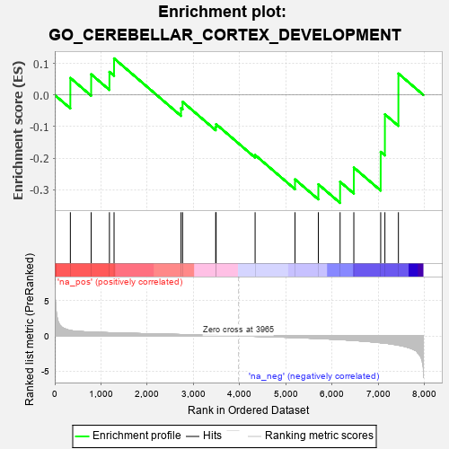
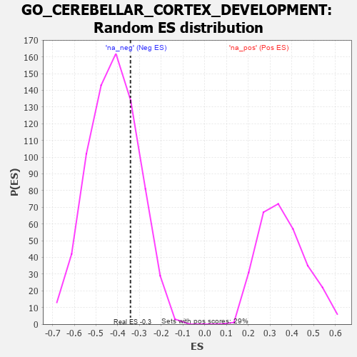

| | | Dataset | 7d |
| Phenotype | NoPhenotypeAvailable |
| Upregulated in class | na_neg |
| GeneSet | GO_CEREBELLAR_CORTEX_DEVELOPMENT |
| Enrichment Score (ES) | -0.34159628 |
| Normalized Enrichment Score (NES) | -0.81066763 |
| Nominal p-value | 0.7531735 |
| FDR q-value | 0.9825812 |
| FWER p-Value | 1.0 |
Table: GSEA Results Summary

Fig 1: Enrichment plot: GO_CEREBELLAR_CORTEX_DEVELOPMENT
Profile of the Running ES Score & Positions of GeneSet Members on the Rank Ordered List
| PROBE | GENE SYMBOL | GENE_TITLE | RANK IN GENE LIST | RANK METRIC SCORE | RUNNING ES | CORE ENRICHMENT | | 1 | DLL1 | | | 337 | 0.760 | 0.0541 | No |
| 2 | RERE | | | 787 | 0.536 | 0.0656 | No |
| 3 | CLP1 | | | 1182 | 0.450 | 0.0732 | No |
| 4 | COQ8B | | | 1282 | 0.434 | 0.1158 | No |
| 5 | RORA | | | 2730 | 0.193 | -0.0416 | No |
| 6 | TTLL1 | | | 2764 | 0.189 | -0.0217 | No |
| 7 | CDK5 | | | 3480 | 0.080 | -0.1014 | No |
| 8 | GLI1 | | | 3489 | 0.079 | -0.0924 | No |
| 9 | LHX5 | | | 4332 | -0.066 | -0.1899 | No |
| 10 | SMO | | | 5195 | -0.247 | -0.2670 | No |
| 11 | TTBK2 | | | 5700 | -0.376 | -0.2826 | Yes |
| 12 | GRID2 | | | 6170 | -0.528 | -0.2746 | Yes |
| 13 | HERC1 | | | 6467 | -0.647 | -0.2296 | Yes |
| 14 | MYH10 | | | 7048 | -0.966 | -0.1800 | Yes |
| 15 | WHRN | | | 7139 | -1.025 | -0.0612 | Yes |
| 16 | LHX1 | | | 7431 | -1.305 | 0.0679 | Yes |
Table: GSEA details [plain text format]

Fig 2: GO_CEREBELLAR_CORTEX_DEVELOPMENT: Random ES distribution
Gene set null distribution of ES for GO_CEREBELLAR_CORTEX_DEVELOPMENT